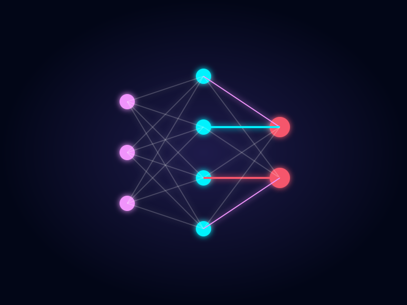

Apresentador: Renan Costa Alencar
Disciplina: Inteligência Computacional
Instituição: Escola Politécnica de Pernambuco - POLI/UPE
Use as setas do teclado ou a tecla Espaço para navegar.
Lógica simbólica e sistemas baseados em regras.
Explosão do Big Data e popularização do Machine Learning.
Redes Neurais Profundas e saltos em Visão Computacional/Voz.
A era da IA Generativa (LLMs) e sua adoção massiva pela sociedade.

Foca no Passado/Presente
Foca no Futuro/Criação